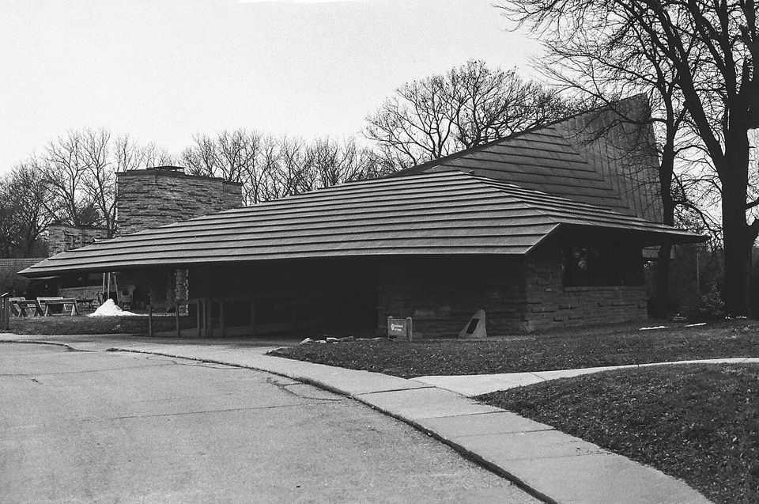

36 EXP. / 필름 비교 / Kodak Tri-X 400 vs Ilford HP5 Plus
Kodak Tri-X 400 vs Ilford HP5 Plus
ISO 400 흑백 필름의 대표 두 가지입니다. 대비가 강하고 입자가 또렷한 쪽은 Tri-X, 계조가 부드럽고 푸시에 너그러운 쪽은 HP5 Plus입니다.

한눈에 비교
| Kodak Tri-X 400 | Ilford HP5 Plus | |
|---|---|---|
| 감도 | ISO 400 | ISO 400 |
| 현상 | 흑백 네거티브 · 흑백 | 흑백 네거티브 · 흑백 |
| 판형 | 135 · 120 | 135 · 120 · 시트 |
| 대비 | 깊고 강한 편 | 부드러운 편 |
| 입자 | 굵고 힘 있게 보임 | 적당함 |
| 푸시 현상 | 푸시해도 계조가 잘 버팀 | 800~3200까지 올려 현상 가능 |
| 잘 맞는 빛 | 강한 햇빛, 그림자가 진 거리 | 흐린 날, 골목, 실내 |
| 잘 맞는 카메라 | 레인지파인더, 수동 SLR | 수동 SLR, 레인지파인더, 이안 반사식(TLR) |
| 가격 | $9.16 | $10.00 |
이럴 때 고르세요
- Kodak Tri-X 400
- 맑은 날 거리 사진, 진하고 극적인 흑백, 보도 사진 같은 느낌
- Ilford HP5 Plus
- 흑백 첫 롤, 어두운 실내에서 감도를 올려 찍을 때, 집에서 현상 연습
자세한 차이
두 필름은 감도(ISO 400)와 쓰임이 거의 같습니다. 실제로 많은 사람이 둘을 번갈아 씁니다. 차이는 결과의 분위기입니다. Tri-X는 검정이 깊고 입자가 또렷해 사진이 힘 있게 보입니다. HP5 Plus는 회색 단계가 부드럽게 이어져 차분하게 보입니다.
어두운 곳에서 감도를 올려 찍는 푸시 현상(현상 시간을 늘려 어둡게 찍힌 필름을 살리는 방법)은 둘 다 잘 받습니다. Ilford 사이트의 리뷰는 HP5 Plus를 EI 3200까지 올려 쓸 수 있다고 안내합니다. 1600 푸시는 두 필름 모두 흔히 씁니다.
아래 판매가 기준으로 가격 차이는 1롤에 1달러가 되지 않습니다. 가격보다 원하는 분위기로 고르면 됩니다. 둘 다 흑백 현상이라 받는 현상소를 먼저 확인해 주세요.
각 필름 자세히 보기
다른 비교
출처
- 가격: 위 표의 판매처 링크(2026년 10월 확인)
- 필름 특징: 이 사이트의 각 필름 가이드
- ILFORD Photo 사이트 — HP5 Plus 리뷰(EI 3200까지 푸시 안내) (2026년 11월 13일 확인)